2022 ~
미디어의 미래를 보다.
<차린건 쥐뿔도 없지만>, <용진건강원> 등 유튜브 콘텐츠의 성공과 전세계 팬들과 메타버스 팬미팅을 통한 가상 콘서트까지. 미디어의 내일을 위해 박스미디어는 나아갑니다.
2025
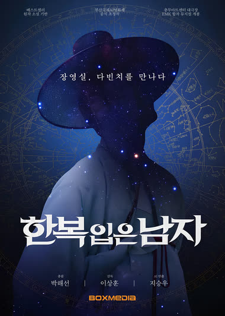
- 황영웅 콘서트 [오빠가 돌아왔다]
- 뮤지컬 [한복 입은 남자]
- 드라마 [수업중입니다3]
- Berry TV [부부스캔들3 금지된 유혹]
- ENA [입 터지는 실험실]
- AI 장편 영화 [한복 입은 남자]
- 콘진원 AI 단편작 [개 많은 로맨스]
- '밀리의 서재' 유튜브 [눈떠보니 내가 시잡이]
- 케이팝 콘서트 [MY K FESTA]
- 밀양강오딧세이 [칼을 품고 슬퍼하다]
- KBS1 저녁 일일드라마 [대운을 잡아라]
- 숏폼드라마 KANTA [나의 시크릿 파트너]
- 숏폼드라마 KANTA [내 남편의 내연녀가 되었습니다]
- TIFFANY YOUNG FAN-CONCERT TOUR in Asia
- 채널 A [몸신의 탄생]
- 2024 KBS 연기대상
2024
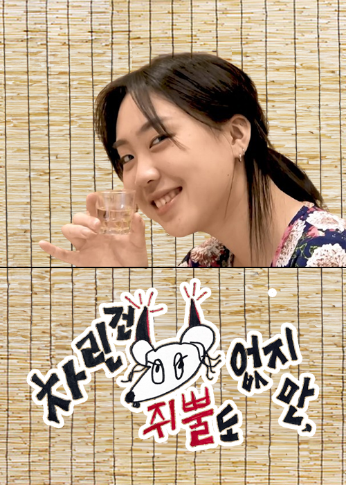
- 유튜브 [차린건 쥐뿔도 없지만]
- KBSN [연애의 참견 시즌3]
- KBS [2TV 생생정보]
- MBC [뽀뽀뽀 좋아좋아]
- 유튜브 [잘생겨서 미안해]
- 유튜브 [용이 너 뭐니]
- 유튜브 [서은광의 광구석 1열]
- 나는 몸신이다
- 하나금융그룹 출발 2024
- POW HOUSE in Bangkok
- UTO FEST in Fukuoka
- IKONYX 2024
- 티캐스트 [끝내주는 부부]
2023
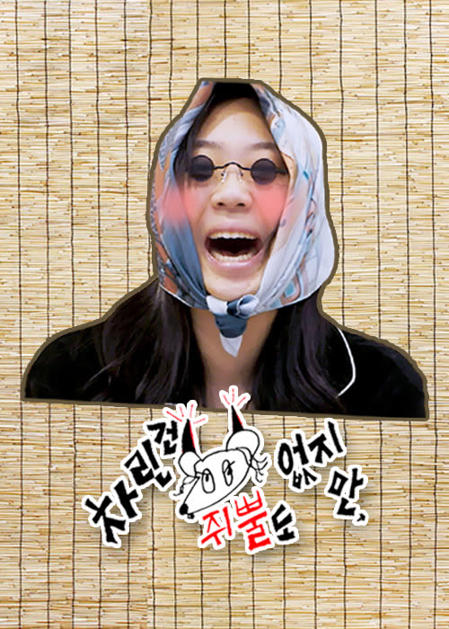
- Berry TV [부부스캔들]
- MBC [뽀뽀뽀 좋아좋아]
- KBSN [연애의 참견 시즌3]
- 채널A [나는 몸신이다]
- KBS [2TV생생정보]
- 유튜브 [차린건 쥐뿔도 없지만]
- 유튜브 [용진호건강원]
- 유튜브 [이용진의 까라ㅇㅋ]
- 유튜브 [나는 몸신닥터]
- SKT ifland <KPOP-SHOW>
- 2023 K-LINK FESTIVAL
- 2023 K-엑스포 in 방콕
- 2023 K-뮤직 시즌-굿밤 콘서트 in 부산
- OCTOPOP Festival in BANGKOK
- 대명 아임레디 콘서트
- 2023 한류팝페스트 in 마카오
- 강남 페스티벌 영동대로 K-POP 콘서트 (KBS WORLD)
- 산청 세계전통의약항노화엑스포
- 치유와 희망의 콘서트 VOL.1 약속
- 유리 팬 미팅투어 (서울, 필리핀, 태국, 대만)
- NCT드림 팬미팅 in 서울
- NCT127 팬미팅 in 서울
- 김우석 팬콘서트 (말레이시아, 대만, 태국)
- SEEN FESTIVAL IN HOIAN
- 카이 팬미팅
- 2030 부산세계박람회 유치 기원 K-Culture Night
- SEOUL FRIENDS CHARITY CONCERT IN BANGKOK
- Sound Check Festival in Bankok
- 서클챠트 뮤직 어워즈 2023 (SPOTV2)
- Tiffany Young 팬미팅
- 순천만국제정원박람회 2023 (여수 MBC, 광주 MBC, 목포 MBC, MBCNET)
- SEEN Festival in Kuala Lumpur 2023
- GULF 팬미팅
- AOMG 월드 투어(유럽&아시아)
2022
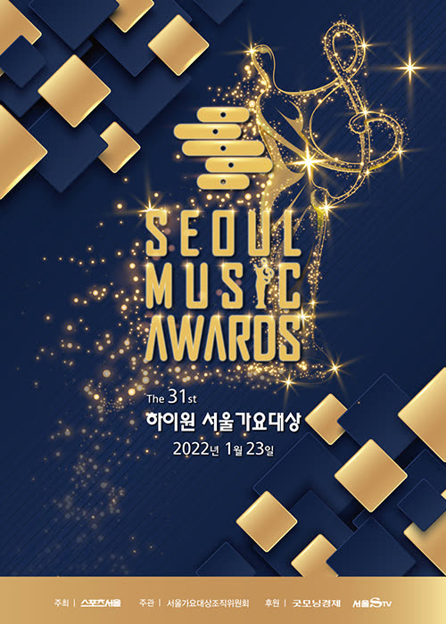
- KBSN [연애의 참견 시즌3]
- 채널A, SKY [애로부부]
- KBS [2TV생생정보]
- 채널A [나는 몸신이다]
- MBC [뽀뽀뽀 좋아좋아]
- MBN, Sky TV [호캉스 말고 스캉스]
- MBC every 1 [다시, 첫 사랑]
- 유튜브 박스미디어 디지털 스튜디오 "에그머니나" 채널
- 더 트래블로그 (SBSM, SBS FiL, Life Time, 디스커버리 채널 코리아)
- 유튜브 차린건 없지만 채널, Mnet [차린건 없지만]
- 유튜브 이상모녀 채널 [이상모녀]
- 유튜브 용진건강원
- SKT ifland <KPOP-SHOW>
- SKT ifland 사라 바트만을 위하여
- [제31회 하이원 서울가요대상] 생방송 연출 및 제작 (KBSJoy, LG유플러스 아이돌라이브)
- [제11회 가온차트 뮤직어워즈] 생방송 연출 및 제작(가온차트 유튜브, 1theK, 멜론)
- 2022 서울 국제 뮤직페어(2022 MU:CON)
- KPOP LAND 2022 in JAKARTA
- K-EXPO VIETNAM 2022
- K-POP&SUPER MODEL FESTIVAL IN BANGKOK (SBS M, SBS FiL)
- 비아이 ALL DAY SHOW: THE HIDDEN STAGE
- KOCCA MUSIC ON THE K: LIVE STAGE
- 박스미디어 [뮤지컬 공연예술사업단] 설립
- BEST OF BEST in Bangkok
- LGU+ [부:퀘스트]
2012 ~ 2021
선택과 집중으로 핵심 역량을 강화하다.
전국민이 시청하는 TV 프로그램, 국내에서 해외로 뻗어가는 K-POP 콘서트 등. 박스미디어는 최고의 전문가 집단으로 역량을 확장하였습니다.
2021
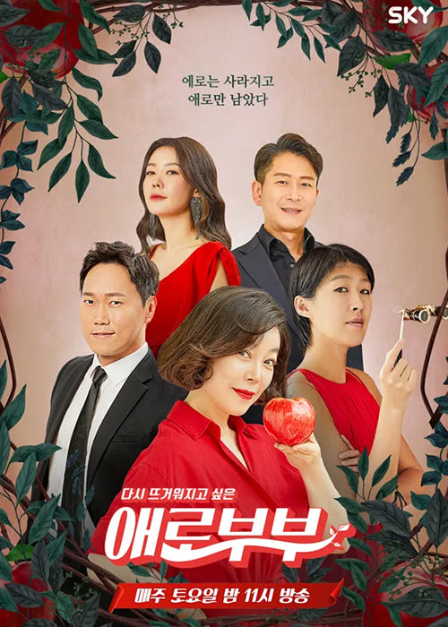
- (색다른 그녀) 개봉작 영화 기획, 제작 및 연출
- [애로부부] 기획 및 연출 (채널A, SKYTV)
- [언니가 쏜다!] 기획 및 연출 (IHQ)
- [연애의참견3] 기획 및 연출 (KBSN)
- [나는몸신이다] 기획 및 연출 (채널A)
- [2TV생생정보] 기획 및 연출 (KBS2)
- [가나다같이] 기획 및 연출 (MBC)
- [뽀뽀뽀 좋아좋아] 기획 및 연출 (MBC)
- [제4회 더팩트 뮤직어워즈] 제작 및 생방송 연출 (국내:LGU+아이돌라이브, 일본:MUSIC ON!TV 미주:TMA 공식 Youtube)
- [뽀뽀뽀 친구친구] 기획 및 연출 (MBC)
- [제23회 서울드럼페스티벌] 방송 제작 (KBS Joy)
- [제31회 롯데면세점 랜선 패밀리콘서트] (TiKTok 온라인송출 / 제작 및 연출)
- [수미산장] 연출 및 제작 (KBS2, SKYTV 동시방영)
- [제30회 하이원 서울가요대상] 생방송 연출 및 제작 (KBS Joy, KBS Drama, KBS W, LG유플러스 아이돌라이브, 일본 니코니코)
- [제10회 가온차트 뮤직어워즈] 연출 및 제작 (M.net)
2020
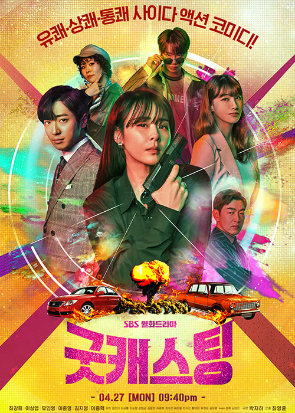
- [2020 더팩트 뮤직 어워즈]- 제작 및 온택트 시상식 연출
- [제11회 INK콘서트]- YouTube 등 온라인 라이브 스트리밍
- [히든싱어6]- 제작(JTBC)
- [애로부부]- 기획 및 연출 (채널A, SKY)
- [뽀뽀뽀 친구친구] - 기획 및 연출 (MBC)
- [내게ON트롯] - 기획 및 연출(SBS Plus)
- [부QUEST] - 기획 및 연출 (LGU+)
- [굿캐스팅] - 기획 및 연출 (SBS)
- [내기맨]- 기획 및 연출 (SBS Plus)
- [밥은 먹고 다니냐] - 기획 및 연출 (SBS Plus)
- [옹성우 - WE BELONG 아시아 팬미팅 투어] 연출 및 제작 (대한민국 서울 & 태국 방콕)
- [제9회 가온차트 뮤직어워즈] 생방송 연출 및 제작 (M.net, 네이버 V-LIVE 생중계)
- [제29회 하이원 서울가요대상] 생방송 연출 및 제작 (KBS Joy, KBs Drama, KBS W, Seezn)
2019
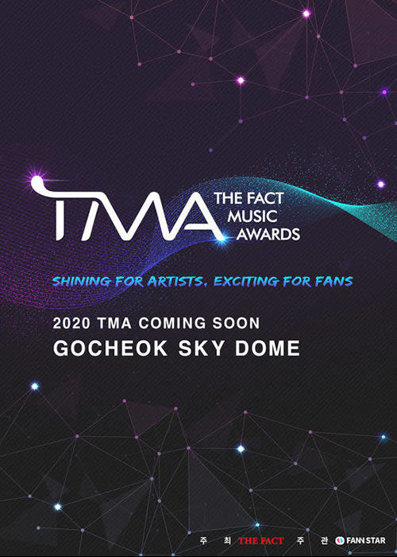
- [밥은 먹고 다니냐?] 기획 및 연출 (SBSPlus)
- [2019 광양 K-POP 슈퍼콘서트] 연출
- 2019 강남페스티벌 영동대로 케이팝 콘서트 연출 및 제작
- [K-FLOW CONCERT 2 IN TAIWAN] 연출
- [인천공항 스카이 페스티벌] 연출 및 제작
- [돌아이덴티티] 기획 및 연출 (라이프타임채널)
- [덕화TV 2 덕화다방] 기획 및 연출 (KBS2)
- [2019 안동 케이팝 페스티벌] 연출 및 제작
- [2019 안동K-POP콘서트] 제작 및 연출
- [제1회 더팩트 뮤직어워즈] 제작 및 생방송 연출 (KBS Joy, KBS Drama, KBS W)
- 대한민국 임시정부 수립 100주년 기념 특집 '내가 사랑한 아리랑' 특집방송 제작
- [덕화TV] 기획 및 연출 (KBS2)
- [ASTRO 2ND ASTROAD TO TAIPEI CONCERT] 스폰서쉽 및 연출
- [제28회 하이원 서울가요대상] 생방송 연출 및 제작 (KBS Joy, KBS DRAMA, KBS W, 빵야TV)
- [제8회 가온차트뮤직어워드] 생방송 연출 및 제작 (Mnet, 네이버 V-LIVE 생중계)
2018
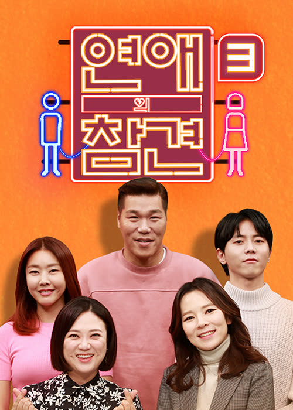
- [내 연애의 기억] 기획 및 제작 (JTBC)
- [K-CONCERT IN MACAU] 연출 및 제작
- [2018 부산원아시아페스티벌] 폐막공연 연출 및 제작 (M.net)
- [M슈퍼콘서트 - IBK 참!좋은 콘서트 특집] 연출 및 제작 (M.net)
- [2018 아시아송페스티벌] 1일차 공연 & 2일차 공연(M.net, 네이버 V-LIVE생중계) 연출 및 제작
- [인천공항 SKY Festival] 크로스오버 콘서트 & M슈퍼콘서트(M.net) 연출 및 제작
- [2018 INK 콘서트] 연출 및 제작 (KBS Drama, KBs Joy. KBSW, KBS World, My K)
- [IBK 참좋은음악회] 제작 및 운영 서울, 인천, 대구, 부산, 광주, 제주 등 10여개 도시 총 14회 공연
- [2018 K-Flow Concert in Taiwan] 연출 및 제작
- [Devendra Banhart Live in Seoul] 내한공연 기획 및 제작
- [Phum Viphurit Live in Seoul] 내한공연 기획 및 제작
- [2018 평창동계올림픽 & 동계패럴림픽 성공기념 국민감사대축제] 특집방송 연출 및 제작
- [제7회 가온차트 뮤직 어워즈] 생방송 연출 및 제작 (M.net. 네이버 V-LINE 생중계)
- [MOGWAI 월드투어 내한 공연] 공연 기획
- [제27회 하이원 서울가요대상] 생방송 연출 및 제작 (KBSN, 네이버 V-LIVE 생중계)
- [KBS JOY] 연애의 참견 기획 및 제작
- [KBS 2TV] 하룻밤만 재워줘 기획 및 제작
- [K-WAVE 2 MUSIC FESTIVAL IN MALAYSIA] 공연 제작 및 연출
2017
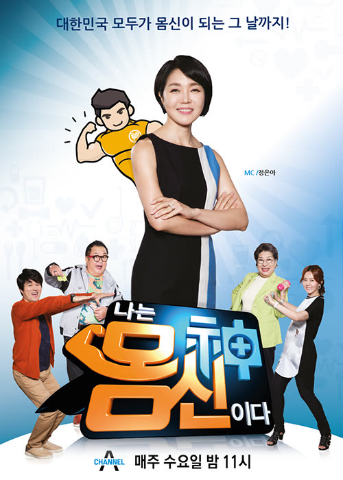
- [평창 동계올림픽 G-100 특별생방송, 하나 된 열정! 이제는 평창!] 생방송 연출 및 제작 (KBS 1TV)
- 강진 K-POP 콘서트 (엠슈퍼콘서트 특집) 연출 및 제작 (M.net)
- GOT7 <7FOR7> 컴백 쇼케이스 연출 및 제작 (네이버 V-LIVE 생중계)
- [KBS 2TV] 하룻밤만 재워줘 기획 및 제작
- [2017 아시아송 페스티벌] 연출 및 제작 (M.net)
- 인천공항 Sky Festival 크로스오버콘서트 연출 및 제작
- 케이팝 콘서트(M Super Concert) 연출 및 제작 (M.net)
- EBS 창사특별기획 [최종면접] 기획 및 제작
- [World Friends Music Festival- M슈퍼콘서트] 연출 및 제작 (M.net)
- [K-POP FESTIVAL 2017 IN MYANMAR] 연출 및 제작
- 피아니스트 Ludovico Einaudi [Elements Tour] 내한공연 기획 및 연출
- [MBC MUSIC K-PLUS CONCERT IN HANOI] 연출 및 제작 (MBC Music)
- [제6회 가온차트 뮤직 어워드] 생방송 연출 및 제작 (M.NET, 네이버 V-LIVE 생중계)
- [제26회 서울가요대상] 생방송 연출 및 제작 (KBSN)
2016
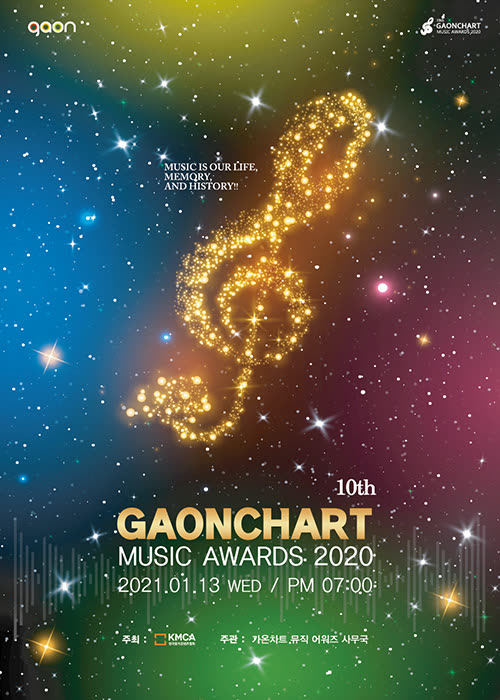
- [스타쇼!원더풀데이] 기획 및 제작 (TV조선)
- [싱데렐라] 기획 및 제작 (채널A)
- 걸그룹 'Matilda' 3rd Digital Single [넌 Bad 날 울리지마] 발표
- [2016 아시아송 페스티벌] 연출 및 제작 (M.net)
- [K-CONTENTS FAIR M슈퍼콘서트 특집] 연출 및 제작 (M.net)
- [8시에 만나] 기획 및 제작 (O'live)
- [영암 한.중 모터 페스티벌 - M슈퍼콘서트] 연출 및 제작 (M.net)
- 걸그룹 'Matida' Digital Single [Summer Again] 발표
- [toe Hear You Live in Seoul] 기획 및 제작
- MBN [부부수업 파뿌리] 기획 및 제작
- 화성 뱃놀이 축제 M.net [엠카운트다운 스페셜] 연출 및 제작 (M.net)
- 걸그룹 'Matilda' Digital single [Macarena] 발표
- 힙합그룹 'Wild Duck' Digital Single [Time Is ON] 발표
- [제5회 가온차트 K-POP어워드] 생방송 연출 및 제작 (KBSN)
- [제25회 하이원 서울가요대상] 생방송 연출 및 제작 (KBSN)
2015
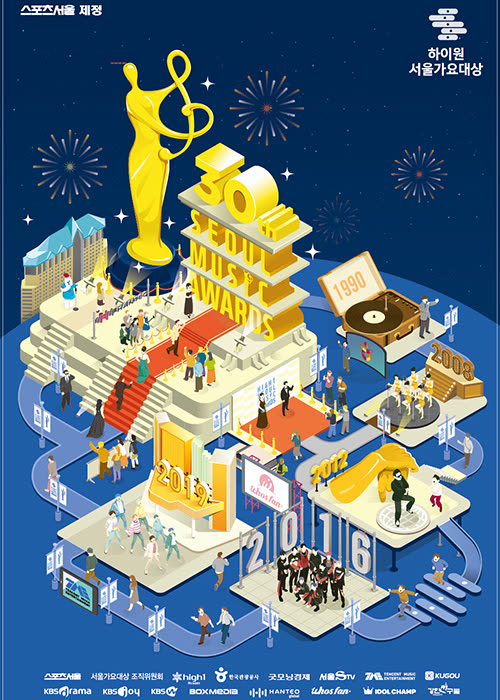
- [2015 아시아송 페스티벌] 연출 및 제작 (KBS 2TV)
- [법무부] 인권국 홍보영상 제작 (1:1 맞춤형 인권 프로그램, 인권 침해신고센터 등)
- [IBK 참좋은 음악회] 제작 및 운영 : 서울, 대전, 대구, 부산, 광주 등 18개 도시
- [라이징 업텐션] 연출 및 제작 (SBS Mtv)
- [경북문경 세계군인체육대회 홍보 CF 및 '솔져댄스 쾌' 음원, 안무 및 뮤직비디오] 제작
- [한식기행 종부의 손맛 시즌2] 연출 및 제작
- [BEST OF BEST in PHILIPPINES] 연출 및 제작
- [한식기행 종부의 손맛 시즌1] 제작 및 연출 (Sky Travel)
- [제4회 가온차트 K-POP 어워드] 생방송 연출 및 제작 (KBSN)
- [제24회 하이원 서울가요대상] 생방송 연출 및 제작 (KBSN)
2014
- [나는 몸신이다] 기획 및 제작 (채널A)
- [생생정보통] 제작 및 연출 (KBS2)
- [KBS 아침 뉴스타임 - 충전 여자의 아침] 기획 및 제작 (KBS2)
- [나르는 쇼퍼맨] 기획, 제작 (KBSN)
- [이제는 인성이다] 제작 및 연출 (국회방송)
- [2014 아시아송 페스티벌] 연출 및 제작 (KBS 2TV)
- [여수 시민의 날 기념 여수 뮤직 페스티벌] 연출 및 제작 (여수MBC)
- [게임의 제왕] 기획 및 연출 (JTBC)
- [한.중 모터 페스티벌 특별공연] 연출 및 제작 (CJ 헬로비전)
- [2014 블루원 드림 페스티벌] 연출 및 제작
- [한.중 외교캠프 심신지려] 제작 및 운영 (KBS)
- [히든싱어 3] 제작 및 연출 (JTBC)
- [Best of Best in Hong Kong] 연출 및 제작
- [부부클리닉 사랑과 전쟁] 제작 및 연출 (KBS2)
- [코베아와 함께하는 KBSN 캠핑 페스티벌] 연출 및 제작 (KBSN)
- [렛츠런 나눔음악회] 연출 및 제작 (JTBC)
- [Best of Best Concert in Nanjing] 연출 및 제작
- [크레용팝 팬미팅 인 홍콩] 연출 및 제작
- [제3회 가온차트 K-POP 어워드] 생방송 연출 및 제작 (KBSN)
- [제23회 하이원 서울가요대상] 생방송 연출 및 제작 (KBSN)
2013
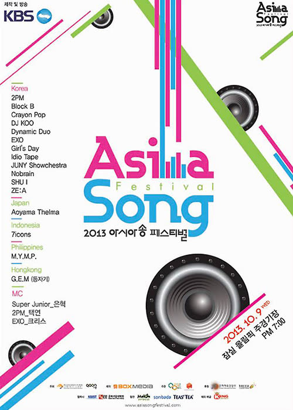
- [2013 아시아송 페스티벌] 연출 및 제작 (KBS 2TV)
- [2013 지산 월드 락 페스티벌] 기획 및 제작
- [2013 샤이니 페스티벌 투어 인 차이나] 연출 및 제작
- [중국판 불후의 명곡] 제작 (SMG 드래곤 TV)
- [2013 순천 정원 박람회 K-POP콘서트] 연출 및 제작 (여수MBC)
- [여러가지 문제 연구소] 기획 및 제작 (채널A)
- [2013 망미비전 시상식] 연출
- [김동건 아나운서 방송인생 50년 축하연] 연출 및 제작
- [평택시 첨단산업 일자리 콘서트] 연출 및 제작 (JTBC)
- [1 vs 100] 기획 및 연출 (KBS2)
- [히든싱어] 프로그램 기획 및 제작 (JTBC)
- [슈퍼 조인트 콘서트 인 타일랜드] 연출 및 제작 (JTBC)
- [K-POP Concert with Poseidon] 연출 및 제작
- [제2회 가온차트 K-POP 어워드] 생방송 연출 및 제작 (KBSN)
- [제22회 하이원 서울가요대상] 생방송 연출 및 제작 (KBSN)
2012
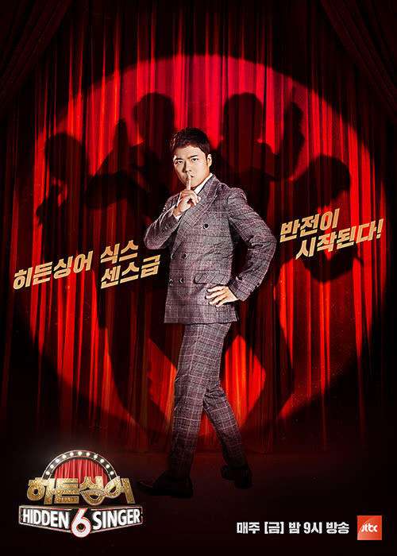
- [스토리셀러 당신의 1분] 프로그램 기획 및 제작 (JTBC)
- [MBC 뮤직 프라임 콘서트] 청주 특집 연출 및 제작 (MBC MUSIC)
- [대전 TJB 신사옥 이전 특집 음악회] 연출 및 제작 (MBC MUSIC)
- [삼성전자와 MBC뮤직이 함께하는 7080 블루 콘서트] (서울편) 연출 및 제작 (MBC MUSIC)
- [여수 MBC 특집] 연출 및 제작 (MBC MUSIC)
- [삼성 전자와 MBC 뮤직이 함께하는 7080 블루 콘서트] (전주편) 연출 및 제작
- [MBC 뮤직 프라임 콘서트 강원랜드 특집, 하이원 희망콘서트] 연출 및 제작 (MBC MUSIC)
- [삼성 전자와 MBC 뮤직이 함께하는 7080 블루 콘서트] (구미편) 연출 및 제작
- [MBC 뮤직 프라임 콘서트] 순천정원박람회 D-300일 기념 특집방송 연출 및 제작 (MBC MUSIC)
- [GLOBAL SUPER IDOL] 방송 기획 및 제작 (KBSN)
- [TOP BAND2] 방송 기획 및 제작 (KBS2)
- [삼성 전자와 MBC뮤직이 함께하는 7080 블루 콘서트] (강릉편) 연출 및 제작
- [제1회 가온차트 K-POP 어워드] 생방송 연출 및 제작 (KBSN)
- [제34회 진도 신비의 바닷길 축제 K-POP 축하공연] 연출 및 제작 (MBC MUSIC)
- [제21회 하이원 서울가요대상] 생방송 연출 및 제작 (KBSN)
2009 ~ 2011
첫 발을 내딛다.
작은 공연의 기획 및 연출부터 방송 프로그램까지. 휴앤락 엔터테인먼트로 우리의 여정은 시작되었습니다.
2011
- 2011 한국음악저작권협회(KOMCA) 시상식 총 기획 및 연출
- <종합편성채널 프로그램 제작>
- [불멸의 국가대표] 기획 및 제작 (채널A)
- [K-POPCON] 기획 및 제작 (채널A)
- [이수근의 바꿔드립니다] 기획 및 제작 (채널A)
- [음치들의 반란 앙코르] 기획 및 제작 (채널A)
- [P.S I LOVE YOU 박정현] 기획 및 제작 (TV조선)
- [KBS JOY 채널 개국 5주년 기념 특집 BIG 콘서트] 총 기획 및 연출
- [2011 CMB 친친 가요제] 생방송 총기획 및 연출 (CMB)
- [이소라의 두번째 프로포즈] 기획 및 제작 (KBS JOY)
- (주)박스미디어로 사명 변경
2010
- 더 보컬리스트 전국 투어 콘서트 기획 및 연출
- 경기도 기독교 총
2009
- 세종문화회관 대극장 마임 콘서트 공연기획 및 연출
- (주)휴앤락 엔터테인먼트 설립